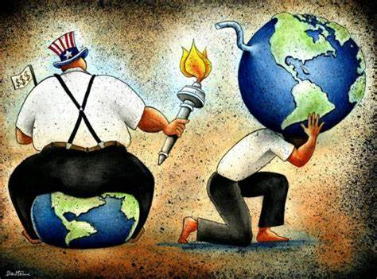

HISTORIA
Consecuensias y riesgos del capitalismo
Ejemplo:
Consecuencias
1.Margina a las personas que no pueden mantener altos niveles de productividad y las mantiene l a las personas en un gran estres.
2.Los gobiernos utilizan los impuestos como una forma de financiar sus operaciones.
3.El producto puede no tener los protocolos nesesarios para el consumo humano.
4.La publicidad puede lavar el cerebro a las personas hacerle creer que comprar un producto te traira la felicidad.
5.Los salarios bajan a medida que aparecen más tendencias capitalistas.
6.El capitalismo rescata al negocio, pero no al consumidor.
7.El capitalismo eventualmente conduce a la desigualdad.
8.La globalisacion puede probocar migracion por la falta de trabajo en su region
9.Las empresas pueden provocar contaminacion en su region o en la zona donde este trabajando
10.Muchas personas se quedan sin dinero y las pocas personas se benefician de esas desgracias.
